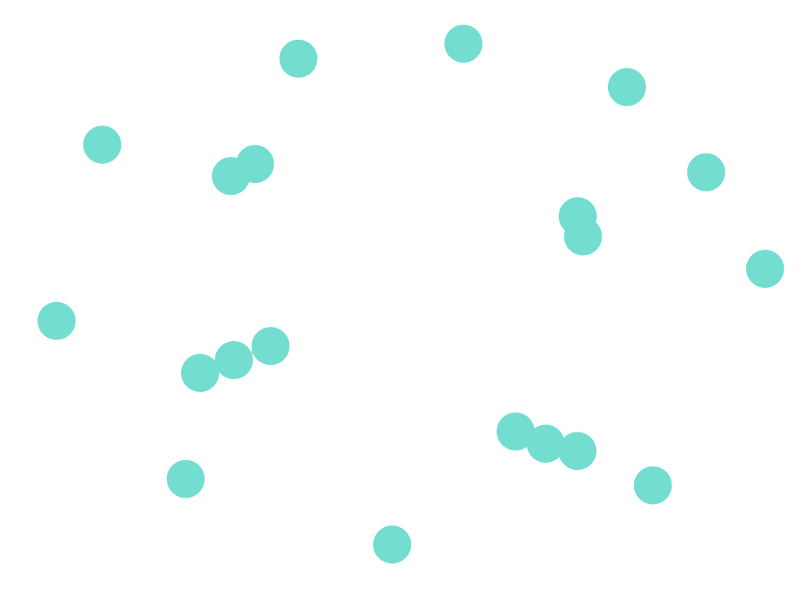
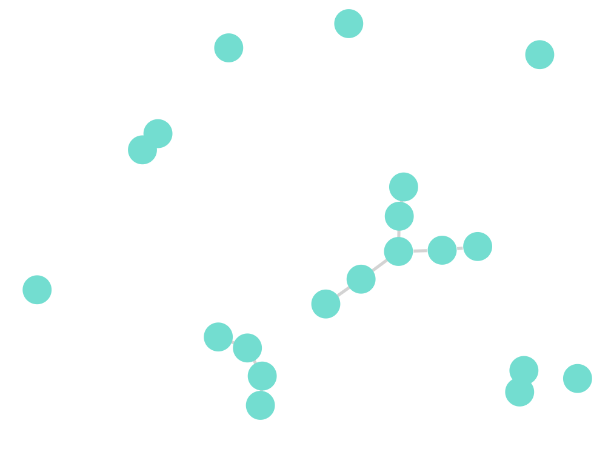
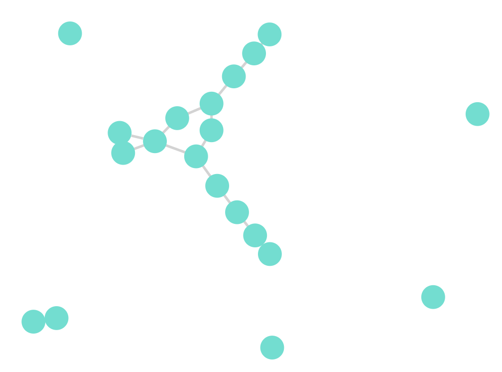
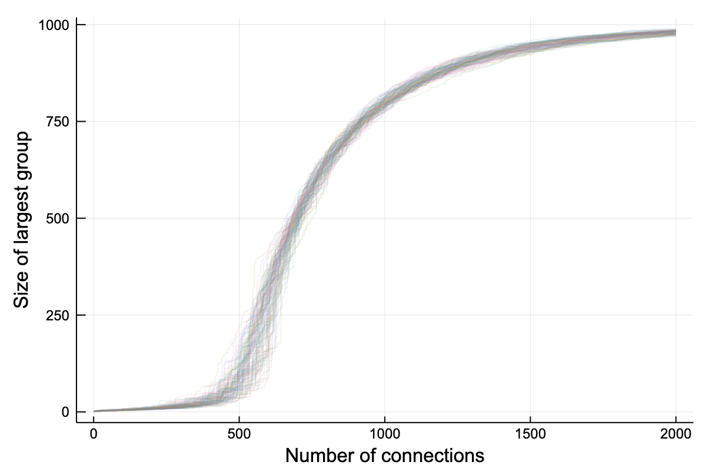
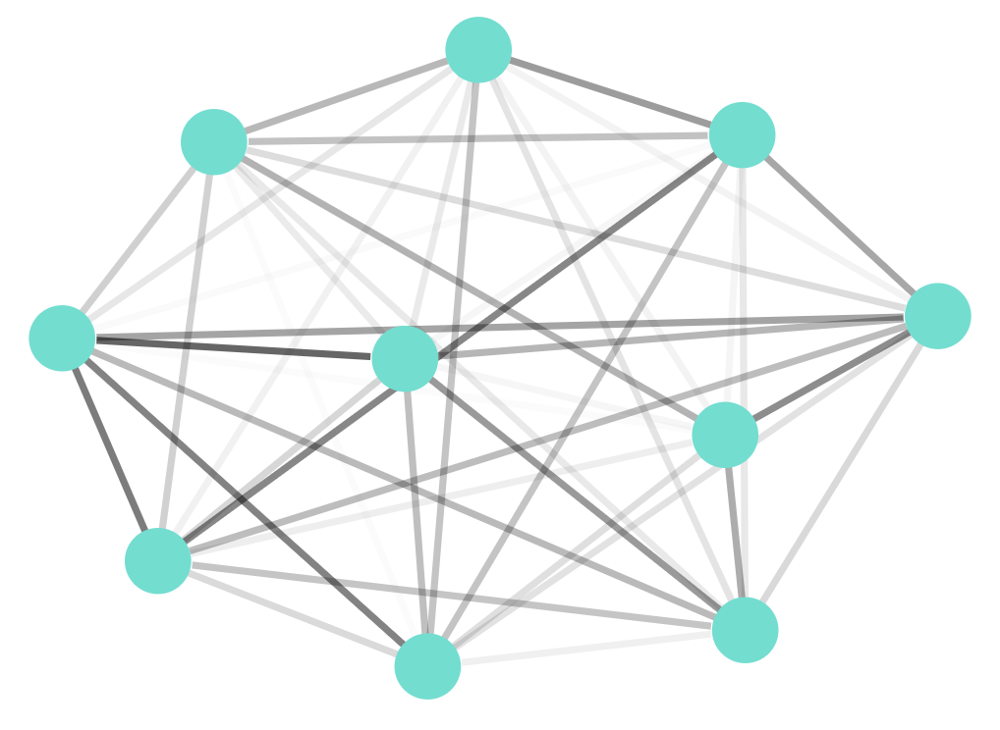
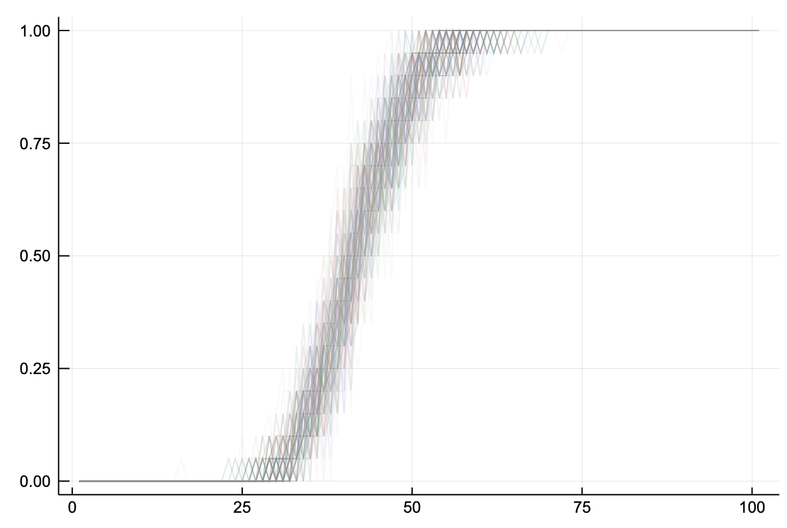

Teams, Systems and Catastrophe
Many surprising discoveries were made in the last century about how groups of connected things behave and interact. I would like to present a couple of the simplest results which, I think, can help us understand some of the phenomena that we see in our daily lives.
To avoid over-abstraction I’ll talk specifically about people connected through teams and distributed software systems connected by dependence, but the same ideas and mechanisms are widely applicable to many other situations.
Dependency Hell
The first one I want to cover was discovered by mathematicians Paul Erdős and Alfréd Rényi in the late 1950s1 and concerns the way networks tend to join together as new connections are added.
1 Presented in a pair of seminal papers: On Random Graphs. I [1959] and On the evolution of random graphs [1960].
They considered what would happen if you start with a fixed set of independent things and then progressively add new connections between them at random.
One might think that the connectivity on the whole would increase in proportion with the number of connections, but this is not the case. The connectivity is not only non-linear2 but undergoes a phase transition3 at which nearly everything joins together very quickly. Let’s see it happening.
2 Non-linear: The output changing in a way that is not proportional to the change in the input. Like the temperature of the shower when it goes from freezing cold to scolding hot after the tiniest of adjustments. We tend to expect linearity, either by nature or nurture, but non-linearity is the norm rather than the exception. To paraphrase Stanislaw Ulam: studying non-linearity is like studying non-elephants.
3 Phase-transition: When a collective undergoes a sudden structural reordering as some parameter of the system is gradually changed. Most often applied to thermo-dynamic systems but complex systems share many of their characteristics.
We start with 20 completely independent objects (people or system components) then start adding connections randomly. What you find is that initially nothing much happens: you have some pairs of things and a few threesomes.

Adding a few more connections and we can see groups starting to coalesce.

However add just a couple more connections and the different connected groups4 of the network quickly connect together to form much a larger (so-called giant) group.
4 This are called components in network jargon but that might be bit confusing for software people for whom everything is a component!

This happens every time. If we run the above scenario many many times with a thousand points and plot the size of the largest group, the tendency is remarkable.

The effect is surprisingly non-linear. In other words, as the number of random connections between things reaches a certain threshold then nearly all the things will be connected together. In the simplest model, the number of connections just needs to be greater than half the number of things.
For people networks this is the first part5 of the Kevin Bacon game, you are certainly connected to Kevin Bacon and indeed to everyone else on the planet.
5 For the other part see The dynamics of ‘small-world’ networks by Watts and Strogatz, which significantly reduces the number of ‘hops’ between you and Mr Bacon.
In the case of software dependencies the situation is less fun. The principle implies that the number of dependencies in our software is unintuitively highly transitive. That is, the chains of dependencies in our code and components tends to make everything depend on everything else. We see why a single fault can bring down an entire company’s infrastructure and is the reason we must be draconian when choosing our dependencies to stand any chance against this effect.
Another lesson to be learnt from this scenario originated some years ago in a paper6 building on the originals mentioned above. It adds to the model a destructive process where connected groups are “burnt down” periodically. The key is that the building and burning down of the groups balances to a precarious and dynamic equilibrium7, so-called self-organised criticality.
6 See Erdos-Renyi random graphs + forest fires = self-organized criticality by Balazs Rath and Balint Toth
7 A nice interactive model Critically Inflammatory is available on the Complexity Explorables website for you to play with.
The take-away for systems designers is that we sometimes see outages in our systems and then “repair” them by scaling or using tools like circuit-breakers and time-outs. At the same time other connections are being added by new features and services. We find ourselves more often than not on the critical line between stable and unstable.
Tipping Points
Let’s look at a second model. This time, rather than taking completely independent objects and gradually connecting them together, we take a set of object which are all connected together, but with varying weights.
This might represent the number of times that one person interrupts another person per day, or the number of requests from one service to another in a distributed system.
We then gradually increase all the weights using some common scaling factor.
This scenario was first proposed by Lord Robert May in a famous paper8 from 1972. He found9 that the interactions between the individual parts become unstable (that is move away from a balanced and steady equilibrium) at a certain sudden, non-linear transition.
8 See Will a large complex system be stable? by RM May, Nature 238 (5364), 413-414
9 See also this course on random matrices for an in-depth description of the reasoning.
We start with a network where all objects, this time just 10 of them, are connected to each other by differing strength interactions.

Using May’s model we can calculate the threshold where the loops and feedback in the network make the whole system unstable. As before, rather that try and study specific configurations, lets run the example many times with different random networks of this type to see the tendency.

May’s criteria for stability has drawn some controversy10 but the finding is still striking. There is a definite tipping point where network effects produce a phase shift in the dynamics of the system.
10 When will a large complex system be stable? by Joel E.Cohen and Charles M.Newman
Imagine the network being a team of 10 people each communicating freely with everyone else. The team members which work most closely together would have the strongest interactions. At the tipping point, a slight change in the situation or team dynamic might be amplified by the network effects of interactions with multiple people and could cause a cascade that affects the team as a whole. This is of course just a model and no doubt unrealistic in detail but it wouldn’t be the first time that a seemingly trivial change would destabilise a team.
Alternatively, imagine the network being a distributed software system. If a peak in load is experienced and a component is pushed beyond its response threshold once again it can affect the entire system disproportionately.
As with the previous example, teams will naturally detect and counteract these tipping points - people with too many interactions will turn off Slack if they can’t keep up. Profilers will be brought to bear to optimise some code just enough to stop overloading the system. This has the result of leaving us constantly on the brink of catastrophe.
Wrap up
In this article there was no intention to make precise predictions about the dynamics of any particular team or system but rather demonstrate universal tendencies using basic ensemble techniques.
We’ve seen a couple of simple examples of how small increases in interactions, either in number or in strength, can have significant, non-linear effects for a system as a whole.
Furthermore, our naturally reactions tend to balance the network effects and leave us at a critical point11 where dangerous tipping points are continually at the doorstep. To a certain extent this explains the universal saying “if it ain’t broke, don’t fix it”.
11 For an deeper look at self-organised criticality the book How Nature Works by Per Bak is the seminal work. For a nice summary of the current situation see Watkins, N.W., Pruessner, G., Chapman, S.C. et al. 25 Years of Self-organized Criticality: Concepts and Controversies. Space Sci Rev 198, 3–44 (2016).
The combination of these dynamics is why a single new team member can bring a working team to a standstill or a small change in load can wreak havoc on a seemingly well oiled system. Note that this doesn’t mean that we should avoid change, just that we need to bear in mind how the system might respond.
Strict minimisation of direct and indirect dependencies is not just about clean architectures. Removal of dependencies and working towards additional quality measures beyond the minimal “it works” moves systems further from the critical point and hence makes them considerably more stable. On the other hand, increasing code entropy and poor design choices will push a system towards the critical point, making them less stable, even if they continue working.
I’m aware that the software industry is not used to talking about systems in these terms, some of these ideas could be considered technical and abstract. Nevertheless these examples are real and can help us increase our literacy with complex systems, our “lived, practical complexity”. They are just couple of the many results of this type that could be applied more generally.